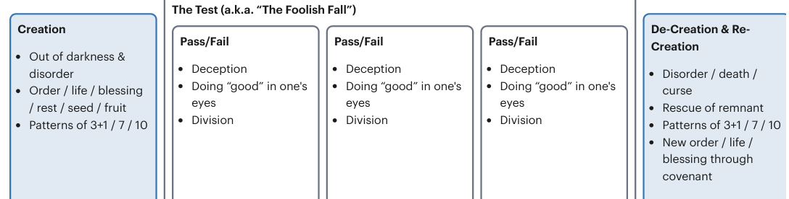

| The Literary Design of Genesis and the Thematic Melody of the | Hebrew Bible |
|---|---|
| Genesis 1:1-2:3 | Genesis 6:2-9:17 |
| Genesis 2:4-5:32 | De-Creation by Water |
| Creation Out of Waters | 4:1-26 |
| 2:4-3:24 | 5:1-32 |
| 1:3-13 | 8:6-9:17 |
| 1:14-31 | 6:1-7:17a |
| 1:1-2 | Folly & Fallout 2nd Generation |
| 2:1-3 | Divided Lineage 3 Sons |
| Folly & Fallout 1st Generation | 7:17b-8:5 |
| Day 1 | 4:1-16 4:17-26 |
| Day 4 | 5:1-2 5:3-27 5:28-32 |
| 2:4-17 | Genesis 11:1-9 |
| 3:14-24 | De-Creation by Scattering |
| Day 2 Day 3 | 11:1-2 |
| Day 5 Day 6 | 11:8-9 |
| 2:18-3:13 | 11:3-7 |
| Genesis 1:1-9:17. Translation and Literary Design by Tim Mackie for BibleProject Classroom: Abraham (2021). | 10:32 |
| Genesis 6:1-9:17 | 11:3-4 11:5 11:6-7 |
| Genesis 9:18-10:32 | 10:6-20 |
| New Creation Out of Water | 10:21-31 |
| 9:18-29 | Ham |
| 10:1-32 | Shem |
| 8:6-9:17 | Genesis 11:27-12:5 |
| 6:1-7:17a | De-Creation by Death, New Creation by Blessing |
| 7:17b-8:5 | 11:27-32 |
| Folly & Fallout 1st & 2nd Generation | 12:1-5 |
| Divided Lineage 3 Sons | 11:26b |
| 9:18-19 | 11:27-28 11:29-30 11:31-32 |
| 9:28-29 | 12:1-3 12:4 12:5 |
| 10:1 | |
| 9:20-27 | |
| 10:2-5 | |
| Japheth | |
| Genesis 6:1-11:9. Translation and Literary Design by Tim Mackie for BibleProject Classroom: Abraham (2021). | |
| Genesis 11:1-9 | |
| Genesis 11:10-26 | |
| New Creation by Scattering | |
| Divided Lineage, 10 Generations + 3 Sons | |
| 11:1-2 | |
| 11:8-9 | |
| 11:3-7 | |
| 11:10a | |
| 11:10b-26a | |
| 11:3-4 11:5 11:6-7 | |
| Genesis 11:1-12:5. Translation and Literary Design by Tim Mackie for BibleProject Classroom: Abraham (2021). |
Gênesis 1:1-9:17. Tradução e Design Literário por Tim Mackie para BibleProject Classroom: Abraão (2021). Gênesis 6:1-11:9. Tradução e Design Literário por Tim Mackie para BibleProject Classroom: Abraão (2021). Gênesis 11:1-12:5. Tradução e Design Literário por Tim Mackie para BibleProject Classroom: Abraão (2021).Genesis 1:1-9:17. Translation and Literary Design by Tim Mackie for BibleProject Classroom: Abraham (2021). Genesis 6:1-11:9. Translation and Literary Design by Tim Mackie for BibleProject Classroom: Abraham (2021). Genesis 11:1-12:5. Translation and Literary Design by Tim Mackie for BibleProject Classroom: Abraham (2021).
Esses ciclos temáticos estabelecem um padrão narrativo, uma melodia temática, que se recicla a cada geração, desenvolvendo e avançando a melodia. A melodia básica é assim.These thematic cycles set up a narrative pattern, a thematic melody, that re-cycles with each generation, developing and advancing the melody. The basic melody goes like this.
Deus traz ordem/vida/bênção para fora do caos/águas/morte/maldição.God brings order/life/blessing out of chaos/waters/death/curse.
Palavras-chave
Vida, bênção, criar, estabelecer, semente, brotar, crescer, fruto, frutífero, multiplicar
Sete, plenitude, juramento (todos grafados שבע)
Imagens-chave: terra seca, refúgio, segurança, ordemKey words
Life, blessing, create, establish, seed, sprout, grow, fruit, fruitful, multiply
Seven, fullness, oath (all spelled שבע)
Key images: dry land, refuge, safety, order
Deus convida um parceiro humano escolhido a compartilhar da ordem/vida/bênção, o que coloca uma decisão/teste de sua confiabilidade sobre a mesa.God invites a chosen human partner to share in the order/life/blessing, which places a decision/test of their trustworthiness on the table.
O parceiro escolhido de Deus falha/passa no teste, geralmente envolvendo decepção/divisão/violência.God's chosen partner fails/succeeds the test, usually involving deception/division/violence.
A mesma pessoa/próxima geração enfrenta sua própria oportunidade e teste, e falha/passa, geralmente envolvendo uma expressão intensificada de decepção/divisão/violência.The same person/next generation faces their own opportunity and test and fails/succeeds, usually involving an intensified expression of deception/division/violence.
A sequência escalada de testes e fracassos leva a uma separação entre os personagens-chave, de modo que uma pessoa ou família se separa do resto e é escolhida por Deus para um novo futuro.The escalating sequence of tests and failures leads to a separation between the key characters so that one person or family splits off from the rest and is chosen by God for a new future.
Palavras-chave encontradas em Gênesis 2-3, 4-5, 6:1-4.Key words found in Genesis 2-3, 4-5, 6:1-4.
Des-criação: Deus provoca uma inversão do nº 1 acima, geralmente uma escalada de caos/morte/maldição.De-creation: God brings about an inversion of #1 above, usually an escalation of chaos/death/curse.
A partir dessa des-criação, Deus escolhe/preserva um remanescente/semente e inicia um novo movimento de re-criação através dele, muitas vezes marcado por alianças e trocadilhos sobre a raiz hebraica שבע, "sete/plenitude/juramento" ou "aliança" (ברית).Out of that de-creation, God chooses/preserves a remnant/seed and begins a new movement of re-creation through them, often marked by covenants and wordplays on the Hebrew root שבע, "seven/fullness/oath" or "covenant" (ברית).
Palavras-chave encontradas em Gênesis 6:5-9:17.Key words found in Genesis 6:5-9:17.

Gênesis 1:1-11:26. Tradução e Design Literário por Tim Mackie para BibleProject Classroom: Abraão (2021).Genesis 1:1-11:26. Translation and Literary Design by Tim Mackie for BibleProject Classroom: Abraham (2021).De que maneiras você vê a história de Yoseph reencenando eventos dos capítulos iniciais de Gênesis?In what ways do you see Yoseph's story replaying events from the early chapters of Genesis?